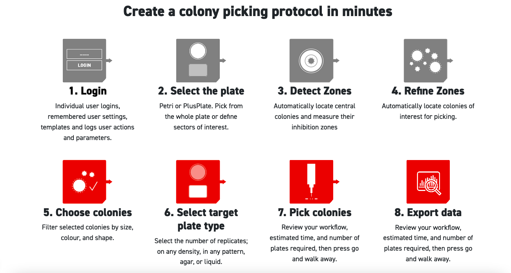
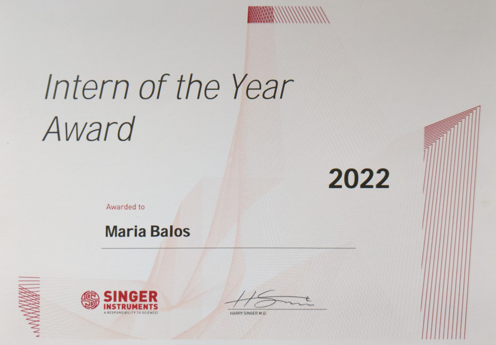

UX Research · Usability Testing · Prototyping · Adobe XD
A 6-month UX design internship at Singer Instruments — a UK-based company founded in 1934 that builds laboratory automation robotics used in genetic and genomic research worldwide. I worked embedded in the user experience design team designing features for their PIXL colony picker.
Images taken during visits to Singer Instruments lab in Minehead, Somerset.
Scientists are power users — they have deep domain knowledge but often interact with software that wasn’t designed with them in mind. At Singer, I had to learn the science well enough to design for it: understanding petri dishes, colony picking, and inhibition zones before I could meaningfully improve the interface around them.
The main challenge was translating complex scientific workflows into interfaces that felt intuitive without oversimplifying them. I worked in an Agile environment alongside engineers and scientists, running user research, heuristic evaluations, and usability testing sessions directly with the researchers who used the product.
The ZOI project was a new feature for the PIXL colony picker, designed to let scientists analyse inhibition areas in petri dishes. I owned the UX from research through to prototype, working with Adobe XD, Jira, and Fibery.
My contributions included heuristic evaluations, user flow design, prototype iterations, and leading A/B testing sessions. Findings were compiled into recommendations shared with the full company.
Watch the BETA video presentation · Feature page on Singer Instruments

Representation of the user flow in the zone of inhibition feature. Source: Singer Instruments
